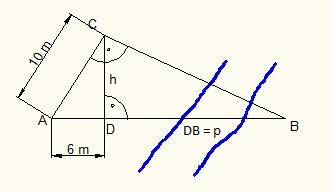

Pythagoras Aufgabe 30 Der Punkt B wurde von A und C aus über einen Fluss hinweg anvisiert. D liegt auf der Strecke AB. Berechnen Sie die Strecke AB in m.  Satz von Pythagoras im Dreieck ADC: AC² = AD² + h² |-AD² h² = AC² - AD² h² = 10² cm² - 6² cm² = 64 cm² |√ h = 8 cm Höhensatz im Dreieck ABC: h² = 6 cm * p 64 cm² = 6 cm * p |:p p = 10,7 cm AB = 6 cm + 10,7 cm = 16,7 cm